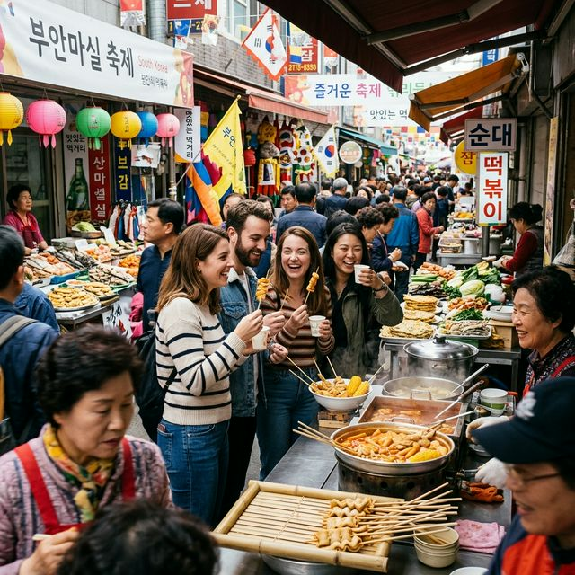
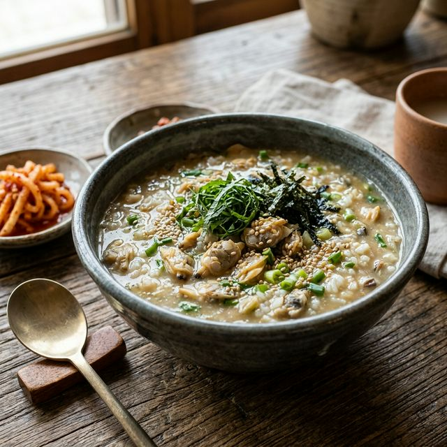
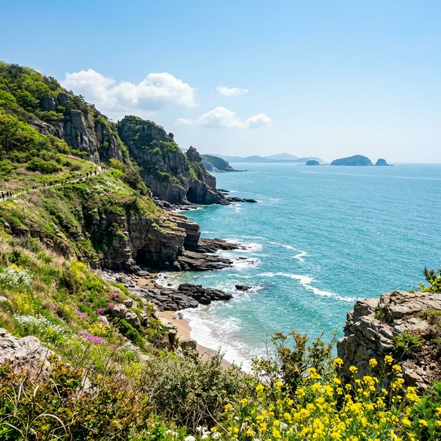

[주요 포인트]
5월 초, 연초록빛 자연과 푸른 서해바다가 만나는 전북 부안에서 '2026 부안 마실축제'가 개최됩니다. 이웃에 놀러가듯 가벼운 발걸음으로 나서는 '마실'이라는 이름처럼, 따뜻한 인심과 사람 냄새 나는
정겨운 축제입니다. 갯벌 바지락 캐기부터 신명 나는 거리 퍼레이드 탐방, 그리고 변산반도 국립공원의 눈부신 해안 절경 드라이브 코스까지 모두 모아 정리해 드립니다.
1. 2026 부안 마실축제: 사람 냄새 물씬 나는 동네 잔치
올해 5월 첫째 주, 부안군 일대는 거대한 축제의 장으로 변신합니다. 부안 마실축제는 일방적으로 보여주기만 하는 공연 중심의 축제에서 탈피하여, 방문객과 군민이 하나 되어 뛰어노는 참여형 문화
관광 축제입니다. '마실'이라는 단어가 주는 푸근함답게, 곳곳에서 정감 넘치는 사투리와 넉넉한 인심을 경험할 수 있습니다.
메인 무대인 부안 매창공원을 중심으로, 옛 장터의
모습을 재현한 주막과 전통 놀이 체험 부스들이 오밀조밀하게 들어섭니다. 2026년 행사에서는 과거의 향수를 자극하는 '응답하라 마실' 테마 공간이 확장되어, 중장년층에게는 진한 추억을, 청년들에게는 힙한
레트로 감성을 선사할 예정입니다.
특히 마을별로 꾸려진 주민 퍼레이드는 이 축제의 가장 큰 볼거리입니다. 트랙터와 리어카를 화려하게 장식하고 각 마을의 특산물을 자랑하며 춤추는 행렬을 보고
있노라면, 어느새 어깨를 들썩이며 함께 박수를 치게 되는 마법 같은 시간을 경험하실 수 있습니다.
2. 변산반도의 보물: 갯벌 바지락 캐기 생태 체험
부안 축제에서 빼놓을 수 없는 핵심 액티비티는 바로 서해안 갯벌 생태 체험입니다. 부안은 질 좋은 갯벌이 끝없이 펼쳐져 있어, 매년 봄이면 알이 꽉 찬 바지락을 캐기 위해
전국에서 사람들이 몰려듭니다. 축제 기간에는 관광객 전용 바지락 캐기 어장이 열려 남녀노소 누구나 쉽게 체험에 참여할 수 있습니다.
장화와 호미만 들고 갯벌에 들어서면, 발도 푹푹 빠지고 얼굴에
진흙이 묻어도 연신 웃음꽃이 피어납니다. 해설사가 들려주는 갯벌 생태계의 비밀을 들으며 펄 속을 파헤치다 보면, 우수수 쏟아지는 싱싱한 바지락과 작은 게들을 잡는 성취감이 엄청납니다.
직접 캔
바지락은 현장에 마련된 세척장에서 깨끗하게 씻어 포장해 갈 수 있습니다. 물때에 따라 체험 가능 시간이 매일 달라지므로, 방문 전 부안군 물때표를 반드시 확인하고 사전 예약을 마치는 것이 필수적인 준비
과정입니다.

흥겨운 풍악 소리와 향토 음식 냄새가 가득한 전통 마실 장터의 모습 / AI 제작 이미지
3. 명품 미식 기행: 원조 바지락죽과 백합탕 극락 코스
열심히 갯벌을 누볐다면 이제 미각을 황홀하게 채워줄 차례입니다. 부안의 5월 미식 로드 1순위는 단연 바지락죽과 백합탕입니다. 갓 잡아 올린 부안산
바지락의 통통한 속살을 다져 넣고 참기름에 고소하게 볶아낸 바지락죽은 보양식이 따로 없을 정도로 진한 깊이를 뽐냅니다.
바지락죽이 부드러운 위로를 건넨다면, 귀족 조개라 불리는 백합으로 끓여낸
뽀얀 백합탕은 속을 뻥 뚫어주는 시원한 해장의 맛입니다. 별다른 조미료 없이 굵은 소금과 청양고추 한두 개만 썰어 넣었을 뿐인데도 바다의 감칠맛이 폭발합니다. 이 맛을 보기 위해 봄마다 부안을 앓는 사람들이
있을 정도니까요.
축제 행사장 내 향토 음식 부스에서도 훌륭한 맛을 자랑하지만, 변산해수욕장 부근이나 격포항 뒷골목에 위치한 30년 전통의 로컬 식당들을 공략해 보는 것도 좋은 방법입니다.
밑반찬으로 깔리는 풀치 조림과 새우장만으로도 밥 한 공기가 뚝딱 사라집니다.
4. 변산반도 국립공원: 채석강과 아름다운 노을
축제장인 부안읍에서 한껏 흥을 냈다면, 차를 몰고 서쪽 끝으로 향해 변산반도 국립공원의 품에 안겨보시길 바랍니다. 수만 권의 책을 켜켜이 쌓아 놓은 듯한 해안 절벽인 '채석강'은
자연이 수천 년에 걸쳐 빚어낸 경이로운 조각품입니다.
물이 빠진 썰물 때가 되면 채석강 아래의 바닥이 드러나며 해식동굴 안으로 걸어 들어갈 수 있습니다. 동굴 안에서 바깥 바다를 응시하며 찍는
역광 실루엣 사진은 부안 여행 인증샷의 정석으로 꼽힙니다. 바위가 다소 미끄러울 수 있으니 반드시 밑창이 탄탄한 운동화를 착용하셔야 합니다.
채석강의 진짜 진가는 해 질 녘에 드러납니다. 붉게
타오르는 태양이 층암절벽을 황금빛으로 물들이며 서해로 떨어지는 장관은 넋을 놓고 바라보게 만듭니다. 채석강 입구 카페에 앉아 차를 마시며 이 황홀한 노을을 감상하는 시간은 축제의 피로를 단숨에 씻어줄
것입니다.

진한 바다의 맛을 품고 정갈하게 차려낸 부안 명물 바지락죽 한 상 / AI 제작 이미지
5. 새만금 방조제 드라이브와 내소사 전나무 숲길
드라이브를 사랑하는 분이라면 세계 최장 길이(33.9km)를 자랑하는 새만금 방조제 도로를 놓칠 수 없습니다. 양옆으로 끝없이 펼쳐진 망망대해를 곁에 두고 달리는 쾌감은 마치
바다 한가운데를 비행하는 듯한 착각을 일으킵니다. 방조제 중간중간 조성된 쉼터에 차를 대고 맞는 서해의 짠 내음 또한 상쾌합니다.
바다의 맛을 보았다면 이제 숲의 기운을 얻을 차례입니다. 부안의
또 다른 상징인 내소사 전나무 숲길로 향해 보세요. 사찰로 들어가는 약 600m의 진입로 양옆으로는 수백 년 된 아름드리 전나무가 빽빽하게 도열해 있어, 걷기만 해도 피톤치드가
온몸을 정화해 주는 기분입니다.
봄날 내소사 경내에는 화사한 벚꽃과 목련이 어우러져 극락정토를 연상케 하는 아름다운 풍경을 자아냅니다. 단아하고 고풍스러운 대웅보전의 목조 꽃문살을 찬찬히
들여다보며 선조들의 뛰어난 예술적 감각에 감탄하는 시간도 가져보시길 바랍니다.
6. 숙박 및 이동 최적화 팁
부안 마실축제 방문 시 동선에 따른 전략적인 숙소 선택이 승패를 좌우합니다. 늦은 밤까지 축제의 열기를 즐기고 싶다면 행사장인 부안읍 인근의 모텔이나 비즈니스호텔을 공략하는 것이
맞습니다. 하지만 진정한 힐링 여행을 원한다면 30분 정도 거리에 있는 변산해수욕장 부근 오션뷰 펜션이나 리조트를 추천합니다.
특히 변산 일대는 캠핑객의 성지로도 유명합니다. 고사포 해수욕장의
빽빽한 소나무 숲 아래에 텐트를 치고, 파도 소리를 자장가 삼아 잠드는 하룻밤은 최고의 낭만을 선사할 것입니다. 5월 바람이 다소 쌀쌀할 수 있으므로 두툼한 침낭은 필수입니다.
대중교통 이동객의
경우, 부안시외버스터미널에서 시작되는 무료 셔틀버스 노선을 적극 활용하세요. 주요 행사장과 관광 명소를 순환하는 노선이 꽤 훌륭하게 짜여 있어 뚜벅이 여행객도 충분히 알찬 일정을 소화할 수 있습니다.

켜켜이 쌓인 오랜 세월의 흔적, 채석강 해안 절벽과 맑은 서해 바다 / AI 제작 이미지
7. 체험형 부스 100% 공략법: 이음 티켓
올해 마실축제를 훨씬 알뜰하게 즐기는 방법이 있습니다. 축제장 내에서 통용되는 전용 상품권인 일명 '마실 이음 티켓'을 활용하는 것입니다. 사전 행사나 현장 투어 미션을 완료할
때마다 이스티켓을 리워드로 지급받을 수 있는데, 이를 모아 먹거리를 사 먹거나 특산품을 구매하는 쏠쏠한 재미가 있습니다.
스탬프 투어는 남녀노소 누구나 쉽게 참여할 수 있습니다. 행사장 곳곳에
숨겨진 5개의 미션 지점을 찾아 스탬프를 찍어오면 소정의 상품과 티켓을 줍니다. 걷기 운동도 하고 선물도 받는 일석이조의 효과로 관광객들의 큰 호응을 얻고 있습니다.
체험 부스에서는 청자 물레
돌리기 상감 체험, 전통 연 날리기, 부안 뽕잎을 활용한 천연 염색 등 아이들의 상상력을 자극하는 유익한 프로그램들이 끊임없이 돌아갑니다. 사전에 예산과 시간을 분배하여 우리 가족에게 가장 잘 맞는 체험
3가지 정도를 골라 집중 공략하는 것이 현명합니다.
8. 날씨 변수와 옷차림 준비
5월 초 부안의 날씨 변수를 정확히 인지하셔야 합니다. 낮에는 초여름처럼 기온이 올라가 반소매 티셔츠 하나로도 충분하지만, 해가 질 무렵 바다에서 불어오는 해풍은 체감 온도를
급격히 떨어뜨립니다. 얇게 겹쳐 입을 수 있는 카디건이나 바람막이 재킷을 반드시 챙기셔야 고생을 덜 수 있습니다.
또한 갯벌 체험이나 서해안 모래사장을 거닐다 보면 신발이 엉망이 되기 십상입니다.
물에 젖어도 금방 마르는 스포츠 샌들이나 부피가 작은 크록스 류를 슬리퍼 팩에 따로 챙겨 다니면 매우 유용합니다. 바닷바람에서 피부를 보호할 선스틱도 수시로 덧발라주세요.
사진을 많이 찍게 되므로
보조배터리 지참은 두말할 나위가 없으며, 해산물을 먹은 뒤 입가에 묻은 자국이나 손을 닦기 위해 물티슈를 한두 팩 가방에 넣어두는 센스도 발휘해 보시기 바랍니다.
9. 2026 부안 마실축제 총평: 남겨진 여운
2026년 마실 축제는 요란하고 소모적인 행사가 아닌, 지역민의 진정성과 자연 생태계의 아름다움이 조화를 이루는 착한 축제의 표본을 보여줍니다. 바다를 무대로 한 탁 트인 풍경
속에서, 오랜 친구의 집에 놀러 간 듯 편안한 위로를 받을 수 있습니다.
먹거리, 볼거리, 즐길 거리가 완벽한 삼박자를 이루는 부안 여행. 일상의 스트레스에 치여 잠시 시야를 넓히고 싶다면 주저
없이 전라도 부안으로 운전대를 돌려보세요. 넉넉하게 담아낸 바지락죽 한 그릇의 훈풍이 얼어붙은 마음을 사르르 녹여줄 것입니다.
이번 주말, 서해의 낙조가 가장 아름다운 변산반도에서 가장 찬란한
봄을 마주해 보시기를 바랍니다. 사람의 온기와 자연의 생명력이 가득한 마실이 여러분을 기다리고 있습니다.